-
Greetings all,
As a part of my continuing effort to make my own life more difficult, I've spent the past few months reverse engineering the (early) digital cluster and it's power supply.
You may have seen the previous links to Reddit. Now, Reddit is particularly bad about storing information (only two sites are worse, I think) so this thread will serve as a continuing documentation of my progress, while my Github will document the finished product at each stage when I'm satisfied with the result.
As mentioned on reddit, I received the finished PCBs last weekend and then spent some time assembling them. I also received a few more filament driver demo boards, which will allow me to power and test integration with all the VFD packages (there are five) before designing the actual replacement power supply.
About the filament driver demo boards:- Each one has a linear regulator and a TI push-pull driver driving a center-tapped transformer. A negative "bias" voltage is supplied at the center tap, and the result is ~2V AC heating voltage set at -18.5VDC compared to the grids and anodes. A trim pot allows the output to be precisely tuned.
- The demo boards are actually grossly oversized due to an oversight early on. I anticipated between 800mA and 1600mA filament current (depending on the package) based on supply voltage and cold resistance. However, the filaments have a very strong positive temperature coefficient. Thus, actual current is ~100mA. As such, several components aren't needed, and the push-pull transformer can (probably) be downsized to a less expensive part than the $6 Wuerth one I had selected.
- Teensy 3.5/3.6
- Level-shifting bus drivers translate the 3.3V to the 5V logic expected by the display's HV shift registers
- Parallel-in serial-out shift registers take in the 4 buttons on the front of the cluster, and the discrete inputs from the car
- Separate ADC reads in the 7 analog signals from the car:
- Supply voltage
- Fuel Level 1
- Fuel Level 2
- Oil Pressure
- Water Temperature
- Manifold Pressure
- Illumination Brightness
- (Bonus! Power supply board temperature [planned])
- Protected inputs for the 3 frequency signals from the car:
- Tachometer
- Speedometer
- Fuel Injection Pulse Width
- CANbus transciever available
- SPI EEPROM/flash available for storing misc data, including replacing the odometer with a small display.
- Supply voltages broken up in such a way that should allow powering off everything except the uC itself, which can then enter sleep mode.
- Warning light pass through, or replacement with Neopixels
Ultimately, this is part of my much larger effort to develop replacements for most of the electronics in the car. As they come up they'll also be documented in the same way. Currently in queue are:- Time Control Unit
- Center Gauge Pod
- Fuel Level Conversion Unit (being developed as a General Module; I'll probably use two or three of them throughout the car)
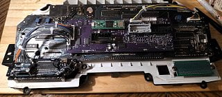 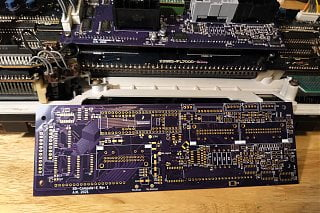 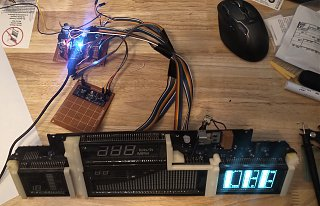 -
Impressive work, I don't understand 90% of what you said, but I do want to ask, any thoughts on completely bypassing the converter for the digital fuel sender unit and allowing for the analog fuel level sender to be compatible with the digital dash? Is it possible?'85 2+0 Turbo -
That will be possible, and is actually what I intend to do for personal use.
Note the four empty footprints under the grey connector -- these are the resistors at the top of the voltage dividers for the passive analog sensors (water temperature, oil pressure, 2x fuel level). Conventional wisdom holds that they should be equal to the value of the sensor at it's measurement midpoint (for linear curves). I elected to make these through-hole components for ease of substitution, though they do also need the higher power handling ability I think. -
At that point it also shouldn't be hard to use a different fuel level sender, maybe something more generic. Never know how long the stocks last for the OEM ones. -
Yup -- Z_Karma tabulated tank capacity vs fluid height for me, which means the only action required to retrofit a completely different sender is to mechanically adapt it.
The same goes for all the other sensors such as GM MAP, Honeywell Oil Pressure, speed pickup, etc. The stock temperature thermistors are probably OK, but are also eligible for replacement. Just a matter of mechanically adapting (and providing the sensor supply & ground for active gauges). -
here a workaround for the sending unit, this works generic
https://www.ebay.com/itm/14370981704…cad031gm700004 -
Sorry for the radio silence. Got myself stuck into some other projects & maintenance.
I have the power supply & data interface working for the "core 4" VFD panels. The trip meter panel, however, keeps exploding the diode used bias the filament. Even two months on I haven't found the short that *has* to be there somewhere.
Additionally, my testing arrangement for the power supply isn't robust enough to survive going in the actual car. Too little headroom for the knockoff buck converters. Throwing together a "production" supply with real components is, unfortunately, a no-go at the moment due to the ongoing supply problems. Shoot, I can't even build a duplicate control board at the moment because I can't get any additional Teensys for the right price.
Someday it'll work out. -
Due to exceptionally heavy rains last week, my basement flooded to a depth of 4.5'. This destroyed all my spinning disks and the power supplies in my server(s). The working copies of the PCB design, as well some of my notes, were stored one of those servers. Data recovery is prohibitively expensive for the spinning rust, but I'm holding out some hope that the solid states in my old desktop have previous versions that are still intact. Technically I can still reorder from OSH, but I don't think I can pull the kicad_pcb files back from them.
This has been a brutal reminder that any backup of data stored in the same location is not a backup at all. I should have been pushing to Github, but was instead only committing to the local copy of the repository and saving to a network location. -
Oh shit man, that's fucking brutal. Best of luck in your recovery efforts, not just the project files but the flooding damage in general.
For my home/work projects i started to share the files on Google Drive across 3 accounts, not so much for redundancy but storage limits.

84 AE/Shiro #683/Shiro #820/84 Turbo -
Holy cow didn't see your post! I keep everything in OneDrive or Google Drive now, nothing really local for me anymore. -
Recovered 90% of the design work from the solid states in my old server, which actually still works. Power supply and all. What I did lose was my demo code, which I get to write from scratch instead of just debugging whatever was wrong with the old code.
The chip shortage remains a PITA. The transformer drivers I selected for the prototype have no interchange and currently cannot be found anywhere. Boo. I'm looking at other options, such as the LM4871 (LM9022) or a fleet of FETs + microcontroller to drive them, but every option has it's pros & cons. The only con to the original plan is cost, at ~$12 / VFD channel driven. (Z31 dashes have 5 VFDs. Ouch).
In the meantime, have some teasers of how my other related projects are going. This time they're designed with parts I can currently get!- Digital Dash Power Supply
- Time Control Unit (or BCM in modern parlance), featuring CAN and a couple additional outputs.
- Steering Wheel Controls adapter, featuring CAN & resistive output (theoretically).
- A fan controller built into the casing of an old transmission control module. Highly specific to my application (Manual swap, E-Fan w/ Mercedes PWM controller, additional pressure sensors, CAN parameter reporting to head unit).
- HVAC controller replacement designed around the cheap Mega2560Pro modules. Featuring CAN, OneWire, and 3 or 4 modern displays (IPS, OLED) to fit the space occupied by the original LCD.
- Digital Dash LED-based warning lights module to go with my controller.
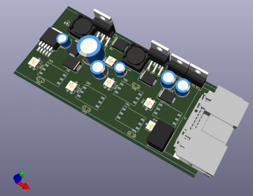 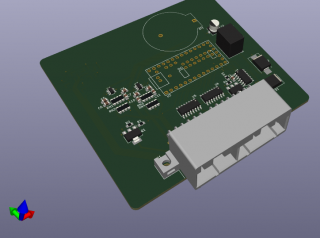 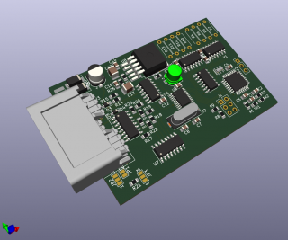 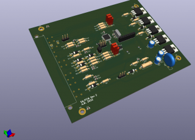 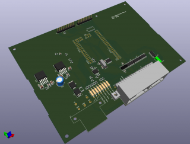 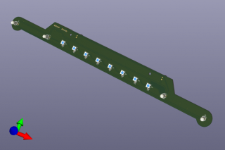 -
Boards submitted to China for production. Bit of a shame, but western PCB production is simply too expensive for the likes of the HVAC main board. Would have been $100+ for that board alone, whereas with JLC I can get all the boards in the batch for $60 (30 + 30 express shipping).
In this batch:- HVAC Controller
- SWC Adapter
- Consult<->CAN Bridge
- ECU Breakout
- My fan controller thing
-
18 months ago I demonstrated an arduino nano talking to individual VFD panels. Today I finally got back to that point, with the new controller and all four panels.
I also bought some color filters. I cut in a red one, hoping to get a nice amber like the clock. Sadly, the result was pink. It turns out the color spectrum is difficult. I may reach out to an actual VFD manufacturer and see if they can supply optimized filters.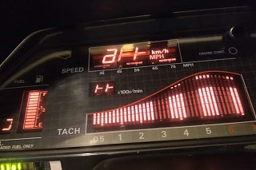 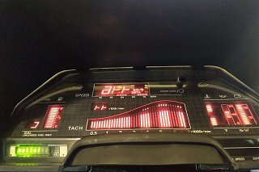 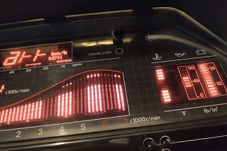 -
When I was playing around with coloring my VFD, I bought a small Roscolux Swatchbook from a local stage lighting supply. Gel filters used for oldschool par-cans are heat and shrink resistant.
You can stack filters for custom colors as well.
84 AE/Shiro #683/Shiro #820/84 Turbo -
Boards arrived after bouncing all over SEA for a week. Nailed the HVAC board dimensions, very pleased.
We shall see how pleased I remain.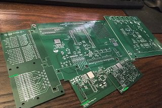 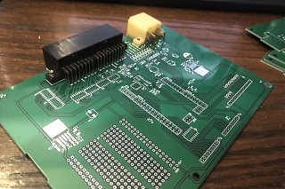 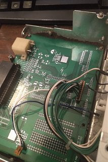

Copyright © 2006–. All rights reserved. Privacy Policy
Comment